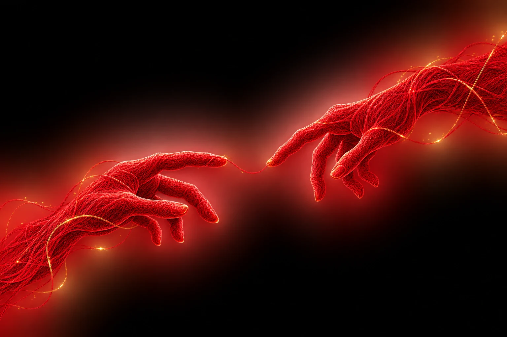

🧵
O SIMBOLISMOO fio invisível
Um fio que não precisa ser visto para existir — e que escolhemos representar em vermelho. O colar e a pulseira tornaram essa ideia uma lembrança concreta.
Marcelo & Catarina · uma história real
Às vezes, duas pessoas não começam uma história com grandes acontecimentos. Às vezes, tudo começa com uma conversa.
24 de agosto de 2026 · 10h22
Entre nessa história
o fio invisível que sempre esteve aquiNão é uma contagem regressiva. É o tempo que continua crescendo desde o começo de uma história.
24 AGOSTO 2026 • 10:22 • BRASÍLIA
O início de uma história. Continua desde então, para que possamos viver uma linda comédia romântica eternamente.
A lenda do fio vermelho do destino fala de conexões que atravessam tempo e distância. Nós demos a ela um símbolo para guardar.
“Eu já te amava antes de te conhecer.”✦
Um fio que não precisa ser visto para existir — e que escolhemos representar em vermelho. O colar e a pulseira tornaram essa ideia uma lembrança concreta.
Sally e Relâmpago McQueen: duas referências que viraram um detalhe só nosso. Uma maneira divertida de lembrar da leveza que existe entre nós.
A camiseta do City e a bermuda do Marquinhos também guardam um plano: há coisas que esperamos usar no momento certo, para criar uma lembrança ainda não vivida.
Até um “eu te amo” em coreano encontrou espaço nas nossas conversas. Porque algumas palavras ficam mais especiais quando ganham uma história própria.
Marisa Monte e a canção que ganhou um significado especial para nós.
Às vezes, o que parece grandioso começa pequeno: uma palavra, uma conversa, uma escolha de permanecer e aprender.
“Eu queria viver o extraordinário com você.”
Cada novo capítulo é uma forma de regar o que está nascendo.
O extraordinário cresce em pequenas coisas.
Dois jeitos de escrever uma história. As palavras originais, uma página por vez.
De Catarina para Marcelo
As cartas mudam automaticamente a cada 30 segundos. Você também pode deslizar para os lados ou usar as setas. Ao ler e rolar o texto, a passagem é pausada.
13 cartas e poemas reunidos até aqui. E muitos capítulos ainda podem ser escritos.
Entre tantas palavras, risadas, orações e descobertas, há algo que ainda não sabemos: quantos capítulos vêm pela frente.
Mas histórias não precisam ser apressadas. Basta que sejam vividas com verdade, um dia de cada vez.